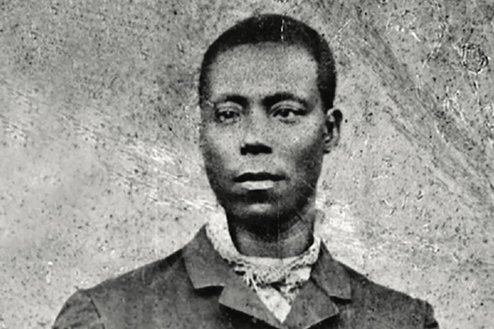

Frederick McKinley Jones
Self taught engineer who helped advance refrigeration

There is a long list of black inventors whose inventions have helped shape the United States of America as we currently know it. Frederick McKinley Jones is one of those inventors and his contributions to the refrigeration industry should be continuously praised. Born in 1893 in Ohio, Frederick was faced with adversity very early in his life. At the age of seven, Frederick became an orphan and was forced to live with a Catholic priest in nearby Kentucky. During his time living with the priest, he developed an interest in repairing automobiles. His newfound interest motivated him to run away from the church life to look for work in Cincinnati. Due to his young age, the work opportunities were limited, and he started working as a janitor in an auto garage. Frederick would eventually start working as a mechanic and eventually becoming the foreman of the shop. Eventually in 1912, Frederick would move from Ohio to Minnesota to start working as a mechanic on a large farm.
Frederick grew to love Hallock, Minnesota and considered it his new home. He would further educate himself on everything mechanics, eventually learning electrical and mechanical engineering well enough to receive an engineering license in Minnesota. Jones would serve in the military during the first World War and use his mechanical knowledge to help his country. Upon enlisting for the war, Frederick was assigned to an African American unit. This assignment was short tenured due to his ability to fix almost anything was in high demand from multiple units. His duties included electrical repairs, mechanical repairs, maintaining communication systems, servicing military vehicles, repairing X-ray machines, and build electrical wiring systems. Eventually he would achieve the rank of Sergeant, which was a relatively high rank for a black man.
Following the war, Jones would return to Hallock to his engineering work. Frederick would go on to invent numerous technologies in the coming years but failed to apply or receive a patent for them. One of these technologies was a portable x-ray machine due to conversations with local doctors who were frustrated by the inability to use x-ray technology during in-home visits with clients. Another invention during this time was a radio transmitter he created to help assist the town with the creation of a local radio station. Jones also created a device to combine moving pictures with sound. Frederick’s inventions drew the interest of Joseph A. Numero who was a local entrepreneur that was working in the movie industry. Numero hired Jones as an electrical engineer for his company, Cinema Supplies. Frederick helped the company improve its sound technology, including converting silent projectors to sound producing projectors. Finally in 1939, Frederick received his first patent. The patent was for a movie theatre ticket machine. The patent would be sold when Numero decided to sell, Cinema Supplies, to RCA.

Just a few years prior to receiving his first patent, Frederick created the prototype for his biggest invention. A friend of Joseph Numero was complaining about the difficulties of transporting food products without them spoiling. Frederick overheard the conversation and went to work on a refrigeration unit that could be implemented in trucks. Upon learning of Jones’ new creation, Numero started the U.S. Thermo Control Company in 1938 with Jones as the vice president. Two years later in 1940, Jones received a patent for his refrigeration unit. This what caused Numero to sell his cinema business and start the thermo business with Jones as his partner. The company would go on to eventually become a multi-million dollar business and landed a huge contract from the U.S. government for World War II. The refrigerated trucks were used to help store blood, store medicine, and transport food. Eventually the company would be renamed to Thermo King Corporation, as it is still known today.
Frederick McKinley Jones died in 1961 in Minnesota. He left behind a legacy that included over 60 patents, majority pertaining to refrigeration. Prior to his death, he became the first African American in the American Society of Refrigeration Engineers in 1944. After his death, Frederick was inducted into the Minnesota Inventors Hall of Fame in 1977. Over a decade later in 1991, Jones received a National Medal of Technology for his inventions. The award is the highest award for technological achievement. Jones was the first African American to receive the award and is regarded as one of the forefathers or refrigeration industry.